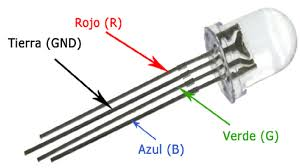

Controlar un LED RGB
Els LED RGB són LED amb els quals podem controlar el color. El LED té 4 potes anomenades R (red), G (green), B (blue) i GND (terra). Podem controlar el color del led fent combinacions entre els tres colors. Si combinem vermell i blau ens sortirà un magenta, si barregem verd i blau ens sortirà un cian i barrenjant vermell i verd ens sortirà groc.
A la figura de sota podem veure un led RGB:

A la figura següent s’observa un LED RGB SMD (surface mount device):

Per a controlar la manera de barrejar els colors podem fer servir la tècnica PWM (veure controlar la brillantor d’un LED).
Amb el codi següent podem cambiar el color i la intensitat de la llum d’un LED introduint la component de cada color amb un valor entre 0 i 100.
import RPi.GPIO as GPIO
pins = {'pin_R':10, 'pin_G':11, 'pin_B':12} # pins is a dict
GPIO.setmode(GPIO.BOARD) # Numbers GPIOs by physical location
for i in pins:
GPIO.setup(pins[i], GPIO.OUT) # Set pins' mode is output
GPIO.output(pins[i], GPIO.HIGH) # Set pins to high(+3.3V) to off led
p_R = GPIO.PWM(pins['pin_R'], 500) # set Frequece to 500Hz
p_G = GPIO.PWM(pins['pin_G'], 500)
p_B = GPIO.PWM(pins['pin_B'], 500)
p_R.start(0) # Initial duty Cycle = 0(leds off)
p_G.start(0)
p_B.start(0)
try:
while True:
duty_R = float(input("Enter red component (0 to 100): "))
duty_G = float(input("Enter green component (0 to 100): "))
duty_B = float(input("Enter blue component (0 to 100): "))
p_R.ChangeDutyCycle(duty_R)
p_G.ChangeDutyCycle(duty_G)
p_B.ChangeDutyCycle(duty_B)
except KeyboardInterrupt:
print("Ctrl + C, quit")
p_R.stop()
p_G.stop()
p_B.stop()
finally:
GPIO.cleanup()